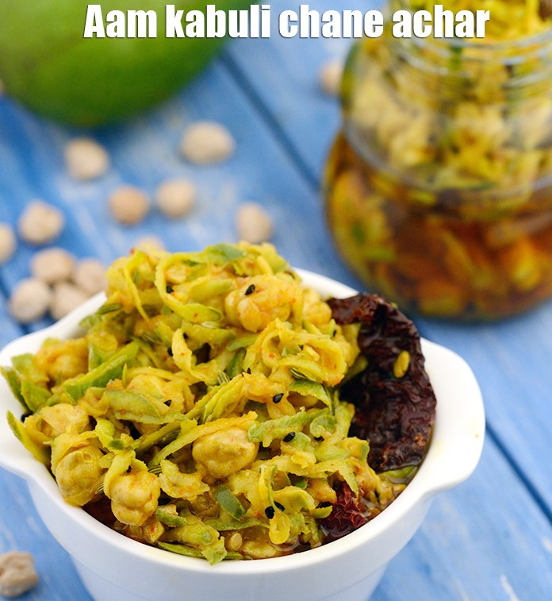

Aam Chana Achar

Ingredients
- 1 cup raw mangoes (peeled and grated)
- 1/2 cup boiled chickpeas (kabuli chana)
- 2 tablespoons mustard oil
- 1 teaspoon mustard seeds
- 1 teaspoon fennel seeds
- 1 teaspoon nigella seeds (kalonji)
- 1/2 teaspoon turmeric powder
- 1 teaspoon red chili powder
- 1 teaspoon Kashmiri red chili powder
- 1/2 teaspoon fenugreek seed powder
- A pinch of asafoetida (hing)
- Salt (to taste)
Steps
- Combine the grated raw mango, turmeric powder, and salt in a deep bowl, mix well, and keep aside for 30 minutes.
- Squeeze out all the water from the raw mango into a bowl and keep it aside. Separate the raw mango water and grated raw mango.
- Refrigerate the grated raw mango overnight.
- In a deep bowl, combine fenugreek seeds, kabuli chana, and raw mango water. Mix well, cover, and keep aside overnight.
- In another bowl, combine fenugreek seed powder, fennel seeds, asafoetida, nigella seeds, Kashmiri red chilies, chili powder, grated raw mango, and the kabuli chana-fenugreek seeds mixture. Mix well and keep aside.
- Heat mustard oil in a deep non-stick kadhai on a medium flame for 3 to 4 minutes or until red hot.
- Remove from the flame and allow the oil to cool completely.
- Once cooled, add the mustard oil to the prepared mixture and mix thoroughly.
- Bottle the pickle in a sterilized glass jar and keep aside for 6 to 7 days.
- After 7 days, the achar is ready to eat. Serve as a tangy accompaniment to your meals.